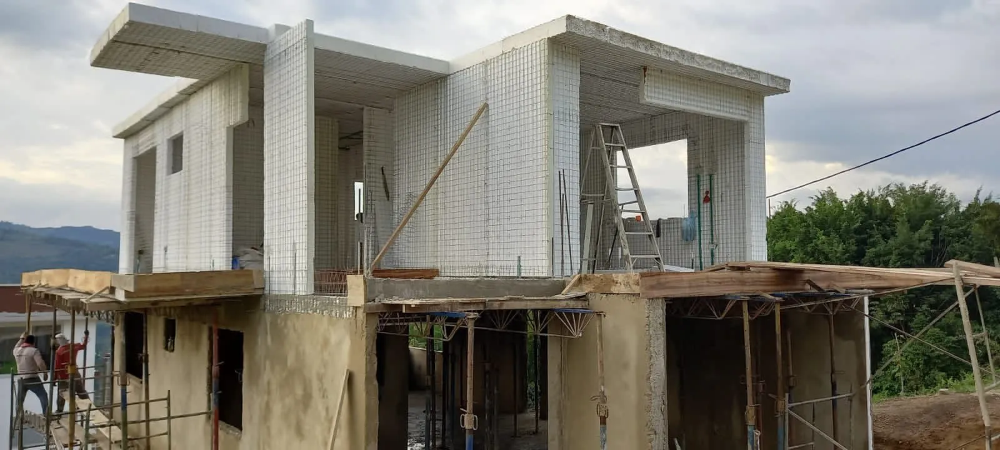
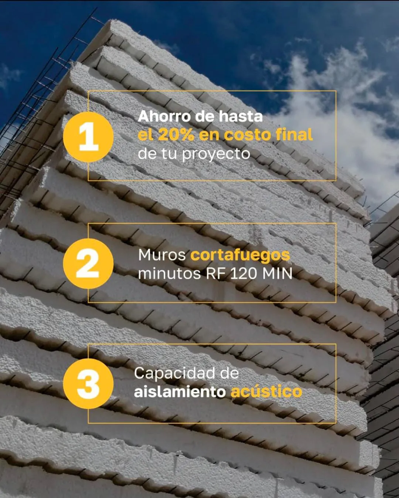

¿Qué es el Sistema Constructivo con Paneles EPS?
Descubre la tecnología de Poliestireno Expandido que está revolucionando la construcción de casas prefabricadas en Colombia, ofreciendo confort, seguridad y eficiencia.
La Tecnología Detrás de tu Próximo Hogar
El sistema se basa en paneles EPS, una tecnología de construcción en seco que utiliza un núcleo de Poliestireno Expandido (EPS) de alta densidad. Este núcleo, compuesto en un 98% por aire, está reforzado por dos mallas de acero galvanizado en cada cara, unidas por conectores de acero.
Una vez instalados, estos paneles se recubren con concreto estructural, creando muros monolíticos de concreto reforzado que son increíblemente ligeros pero a la vez extremadamente resistentes. Esta combinación es la clave de sus extraordinarias propiedades de aislamiento y resistencia estructural.

Descubre el Sistema EPS en Acción
En este video podrás ver de cerca cómo trabajamos con los paneles EPS en CONCASAYA. Observa el proceso completo: desde la fabricación de los paneles con Poliestireno Expandido y mallas de acero, hasta su instalación y recubrimiento con concreto estructural.
El sistema EPS ofrece un aislamiento térmico y acústico superior, creando hogares más confortables y eficientes energéticamente. Además, su construcción rápida y liviana lo convierte en la opción ideal para tu proyecto de vivienda prefabricada.
Ventajas Principales del Sistema EPS
Construir con paneles EPS no solo es más rápido; es construir de forma más inteligente y confortable.
Máximo Aislamiento Térmico
El aire atrapado en el núcleo de EPS es un aislante natural superior. Esto mantiene tu hogar fresco en climas cálidos y cálido en climas fríos como el de la Sabana de Bogotá. El resultado es un confort térmico inigualable y un ahorro energético significativo en climatización.

Un Oasis de Paz: Aislamiento Acústico
La estructura de los paneles de EPS aisla las ondas sonoras de manera muy eficaz. Esto reduce drásticamente el ruido exterior, creando un ambiente interior de paz y tranquilidad. Disfruta del silencio y el confort acústico que solo este sistema puede ofrecer.

Seguridad y Durabilidad: Resistencia Estructural
La combinación de un núcleo ligero con mallas de acero y concreto estructural crea una estructura monolítica de gran resistencia estructural. Nuestras casas con EPS cumplen y superan los requisitos de la norma de sismorresistencia NSR-10, ofreciendo una construcción liviana, robusta y segura.

Construcción Rápida, Eficiente y Sostenible
Al ser un sistema de construcción en seco, se reducen drásticamente los tiempos de obra. Hay menor desperdicio de materiales, se utiliza menos agua y la eficiencia energética del material disminuye la huella de carbono del proyecto y de la vivienda a largo plazo.
